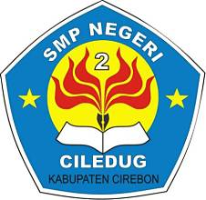

SELAMAT DATANG DI SMP NEGERI 2 CILEDUG
website resmi SMP Negeri 2 ciledug

Tentang Kami
KARAKTERISTIK SEKOLAH
Kurikulum Operasional SMP Negeri 2 Ciledug disusun sebagai pedoman dalam penyelenggaraan kegiatan pembelajaran. Kurikulum Operasional Sekolah (KOS) ini dikembangkan dengan mengacu pada Capaian Pembelajaran (CP) yang sudah disusun secara nasional kemudian diimplementasikan dalam kegiatan pembelajaran berdasarkan Alur Tujuan Pembelajaran (ATP) yang sudah disusun.
Penyusunan Kurikulum Operasional SMP Negeri 2 Ciledug ini mengakomodir kebutuhan para pelajar mengembangkan kemampuan keterampilan abad 21 yang meliputi integrasi PPK, literasi, 4C (Creative, Critical Thinking, Communicative, dan Collaborative), dan HOTS (Higher Order Thinking Skill).
Berdasarkan analisis konteks yang dilakukan, SMP Negeri 2 Ciledug sebagai satuan pendidikan yang diminati mayoritas penduduk di wilayah sekitar, dengan potensi wilayah/letak yang strategis di tengah perkotaan memiliki beberapa kekuatan di antaranya:
- Input peserta didik berasal dari keluarga yang kurang peduli terhadap kepentingan pendidikan.
- Lingkungan pedesaan agak sulit melakukan koordinasi dan komunikasi.
- Kultur masyarakat Ciledug yang bernuansa Sunda.
- Sarana pendukung layanan proses pembelajaran yang kurang memadai.
- Merupakan salah satu sekolah yang terletak di lingkungan pedesaan yang asri dan rindang.
- Letak sekolah kurang strategis karena agak sulit diakses.
Selain kekuatan/kelebihan sebagaimana tersebut di atas, SMP Negeri 2 Ciledug juga mempunyai beberapa kelemahan, yaitu:
- Sarana pendukung untuk pengembangan potensi/skill yang terbatas (tidak memiliki lapangan olahraga yang sesuai standar SNP).
- Laboratorium IPA yang kurang representatif.
Namun, hal tersebut tidak mengurangi semangat warga sekolah dalam belajar. Hal ini dibuktikan dengan prestasi yang pernah diperoleh, baik itu akademik maupun non-akademik.
Masyarakat di sekitar SMP Negeri 2 Ciledug sebagian besar adalah petani, dan sebagian lain adalah pedagang serta wiraswasta. Sebagai sekolah yang berada pada lingkungan pedesaan dan input peserta didik yang mayoritas dari dalam pedesaan, serta kondisi desa yang tidak begitu luas dengan tidak memiliki sumber daya alam yang luas pula, maka profil pelajar yang dihasilkan adalah pelajar yang memiliki potensi mengkreasi ide dan keterampilan untuk mewujudkan daerahnya menjadi destinasi wisata wirausaha.
Wisata wirausaha tersebut di antaranya adalah kerajinan handy craft, kuliner khas daerah, dan taman buatan kota. Dalam rangka meningkatkan potensi tersebut, SMP Negeri 2 Ciledug mengadakan kerja sama dengan dunia usaha dan sumber daya alam/lingkungan.
Kota di mana SMP Negeri 2 Ciledug berlokasi juga mempunyai budaya daerah yang menjadi ciri khas, yaitu pendekar. Dalam rangka mewujudkan budaya daerah tersebut maka diwadahi dalam suatu kegiatan dengan nama “TUGU PENDIKAR SAKTI” (saTU Guru sebagai PENDIdik KARakter yang menghasilkan SAtu Karya presTasI peserta didik).
Kegiatan ini dimaksudkan untuk menggali potensi pendidik dan peserta didik dalam pembentukan karakter peserta didik yang mampu bersaing dalam dunia global.
Untuk memberikan layanan kebutuhan dan tuntutan masa depan peserta didik agar menjadi insan yang memiliki kemampuan daya saing di era generasi 4.0, dengan tetap menjunjung tinggi nilai luhur bangsa yang tersirat dalam sila-sila Pancasila serta mengembangkan cinta budaya daerah dan bangsa, maka SMP Negeri 2 Ciledug menyusun Kurikulum Operasional sesuai dengan karakteristik peserta didik dan budaya lokal daerah setempat.
Peserta didik SMP Negeri 2 Ciledug diharapkan mempunyai life skill yang berguna dan mampu mengaplikasikannya dalam masyarakat dan dunia pendidikan. Sehingga harapan dari Pemerintah Kabupaten Cirebon untuk mencetak generasi yang mampu beradaptasi dengan perkembangan zaman akan terwujud.
Salah satu upaya untuk mencapai harapan tersebut dilakukan melalui kreasi budaya literasi pada peserta didik. Sehingga peserta didik mampu menghasilkan salah satu karya yang mencerminkan profil pelajar Pancasila yang mampu bernalar kritis dan berkebinekaan global.
Capaian pembelajaran yang diharapkan adalah terciptanya profil pelajar yang beriman, bertakwa kepada Tuhan YME dan berakhlak mulia, yang mandiri, bernalar kritis, kreatif, bergotong royong, dan berkebinekaan global.
Secara yuridis, Kurikulum Operasional SMP Negeri 2 Ciledug disusun dengan mengacu pada peraturan perundangan terkait pendidikan yang berlaku, baik itu dari pusat ataupun dari daerah.
Sedangkan secara pedagogis, Kurikulum Operasional SMP Negeri 2 Ciledug mengacu pada kemampuan guru sebagai tenaga profesional dalam pembelajaran dan penilaian.
Peningkatan profesionalisme guru dilakukan dalam bentuk pelatihan bersifat praktik secara berkesinambungan. Hal tersebut merupakan komitmen untuk menjadi profesional dalam layanan pada peserta didik.
Dengan mengambil salah satu nilai pendidikan dari Ki Hajar Dewantara yaitu 3N: NITENI (mengamati dengan teliti), NIROKKE (mencoba dengan cara meniru), NAMBAHI (mengembangkan dari yang sudah ditiru/yang sudah ada), dan dengan mempertimbangkan tuntutan di era 4.0, maka ditambahlah N yang keempat yaitu NGGAWE (mencipta/membuat/menghasilkan/ menemukan hal baru).
4N tersebut merupakan ciri khas pembelajaran yang akan dilakukan oleh peserta didik bersama guru di SMP Negeri 2 Ciledug.
Hal lain, dari perspektif pedagogis, yang dijadikan pertimbangan adalah Undang-Undang Guru dan Dosen yang menyebutkan bahwa guru memiliki kesempatan untuk mengembangkan keprofesionalan secara berkelanjutan dengan belajar sepanjang hayat.
Dari landasan pedagogis dalam konteks merdeka belajar, proses belajar di SMP Negeri 2 Ciledug berorientasi pada peserta didik dan bentuknya beragam. Pembelajaran sebagai aktivitas tim yang bersifat kolaboratif.
Pembelajaran di SMP Negeri 2 Ciledug yang terintegrasi dengan Profil Pelajar Pancasila secara umum bertujuan untuk membentuk karakter peserta didik yang bertakwa kepada Tuhan YME dan berakhlak mulia, berkebinekaan global, mandiri, bernalar kritis, bergotong royong, kreatif, dan inovatif yang mampu mengkreasikan ide/gagasan berdasarkan kekhasan daerah yang tetap berakar pada budaya bangsa.
Tentang Guru
Guru-guru di SMP Negeri 2 Cildeug adalah tenaga pendidik yang profesional dan berkompeten di bidangnya.
mereka memiliki pengalaman megajar yang luas dan berdedikasi tinggi dalam mendidik siswa-siswi.
mereka juga aktif dalam mengikuti pelatihan dan seminar untuk meningkatkan kualitas pengajaran mereka.
dengan semangat dan komitmen yang sangat tinggi, guru-guru di SMP Negeri 2 Ciledug berusaha memberikan pendidikan terbaik bagi para siswa-siswi.
mereka tidak hanya mengajarkan materi pelajaran, tetapi juga membimbing siswa-siswi dalam megembangkan karakter, kreativitas, dan keterampilan sosial mereka.
Kontak
Jika Anda memiliki pertanyaan atau membutuhkan informasi lebih lanjut, silakan hubungi SMP Negeri 2 Ciledug melalui kontak berikut.
📍 Alamat
SMP Negeri 2 Ciledug
Kabupaten Cirebon, Jawa Barat
info@smpn2ciledug.sch.id
📞 Telepon
(021) 12345678
🕐 Jam Operasional
Senin - Jumat
07.00 - 15.00 WIB